Информация
Докладчик
Список достижения:
Добавление информации о
навыках
Я перешёл в какталог ~/work/blog/content/authors/admin и редактировал
файл _index.md:
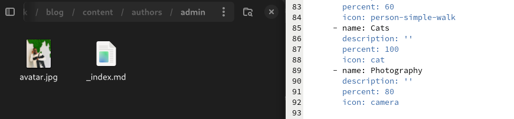
Рис 1: authors/admin
Добавление информации о
навыках
Я добавил технические навыки и хобби:
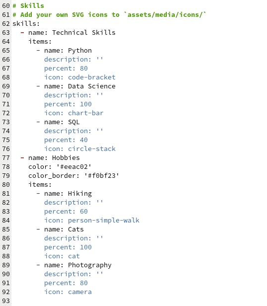
Рис 2: Технические навыки
Добавление информации о
навыках
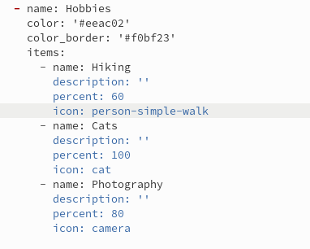
Рис 3: Хобби
Добавление информации о
навыках
На локальном сервере я проверил изменении:
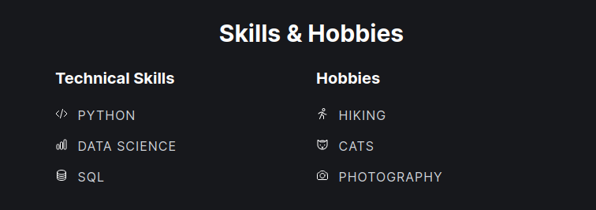
Рис 4: Проверка добавление
навыки
Добавить информацию об опыте
Чтобы добавить информацию об опыте, я перешёл в ~/work/blog/content и
открыл файл _index.md для редактировния:
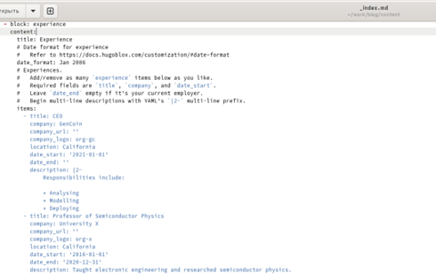
Рис 5: _index.md
Добавить информацию об
опыте
Я заменил существующую информфцию на свою собственную:
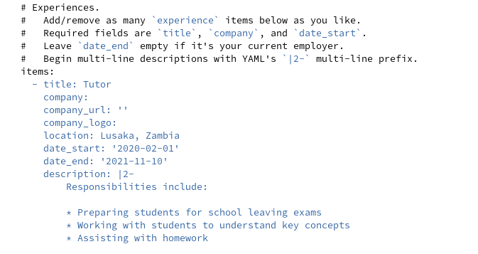
Рис 6: Замена информации
Добавить информацию об
опыте
На локальном сервере я проверил изменении:
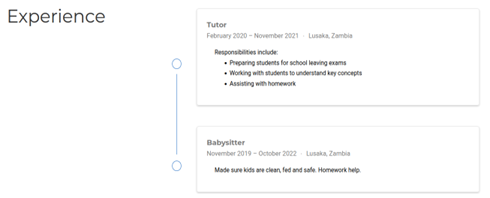
Рис 7: Проверка добавление
опыта
Добавить информацию о
достижениях
В том же файле, где я добавил информацию об опыте, я заменяю
информацию о достижениях на свою:
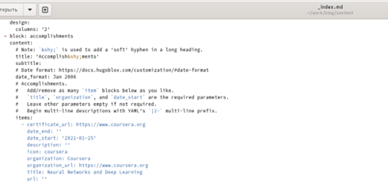
Рис 8: Достижения
Добавить информацию о
достижениях
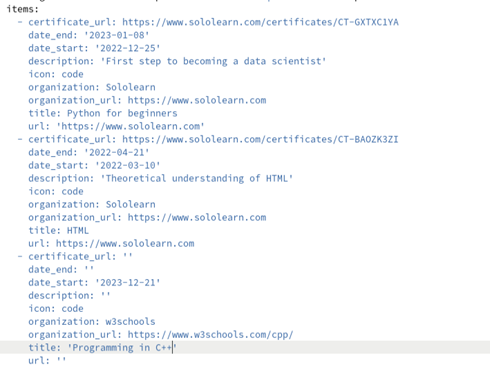
Рис 9: Замена информации о
достижениях
Пост по прошедщей неделе
Я создал папку lastweekofMarch и в ней вставил фотографию и файл
index.md:
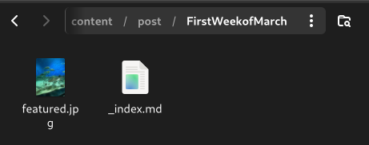
Рис 10: Создание папки
Пост по прошедщей неделе
Затем я редактировал файл index.md:
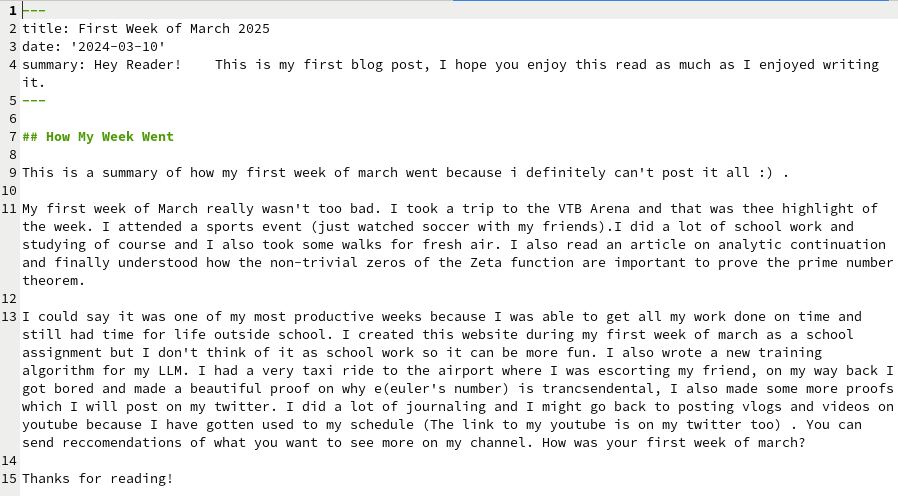
Рис 11: Редактирование файла
Пост на тему по выбору
Я создал папку Markdown и в ней вставил фотографию и файл
markdown.md:
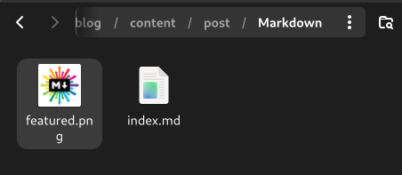
Рис 12: Создание папки
markdown
Пост на тему по выбору
Затем я редактировал файл markdown.md:
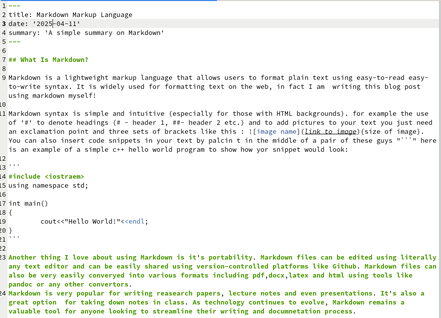
Рис 13: редактирование файла
markdown
Пост на тему по выбору
На локальном сервере я проверил изменении:
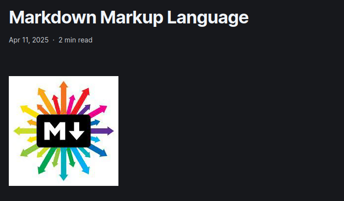
Рис 14: Проверка добавление
постов
Сохранение изменений на
сайте
Я перенес все изменения в репозиторий блога моего github:
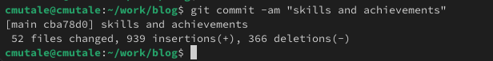
Рис 15: to blog repository
Сохранение изменений на
сайте
Я перешёл в каталог public и перенес все изменения в репозиторий
сайта моего github:
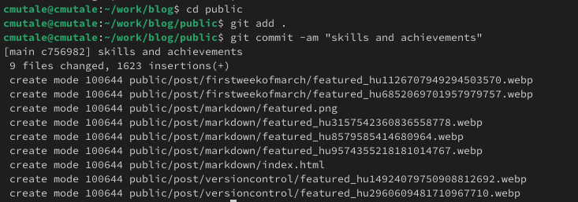
Рис 16: to site repository